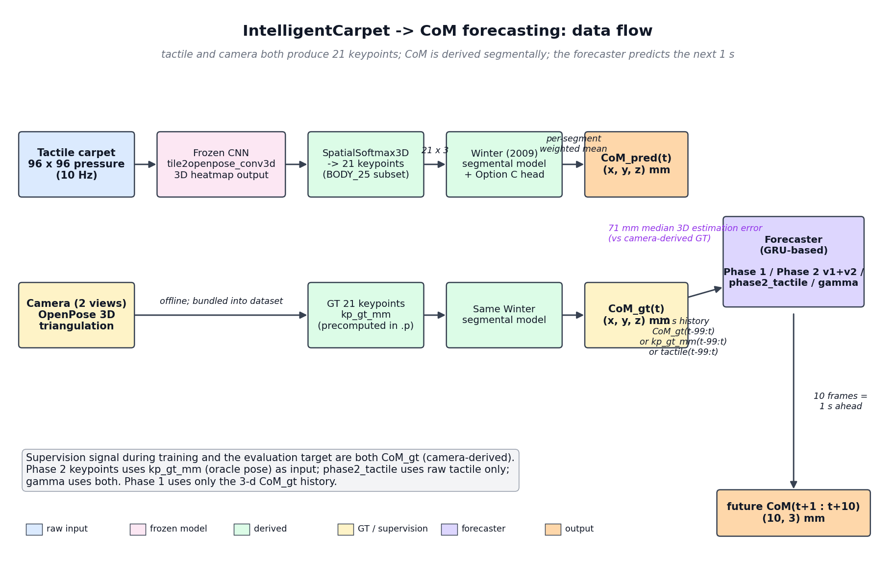
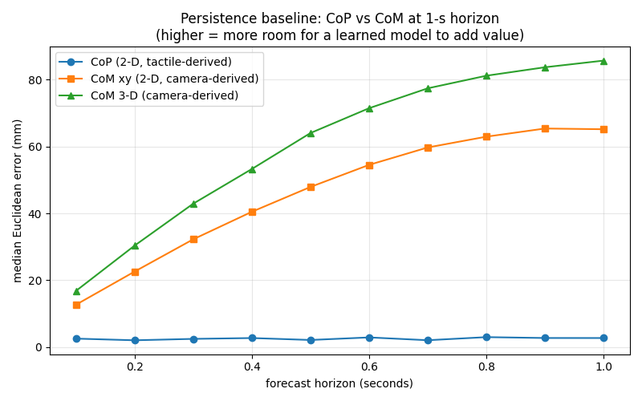
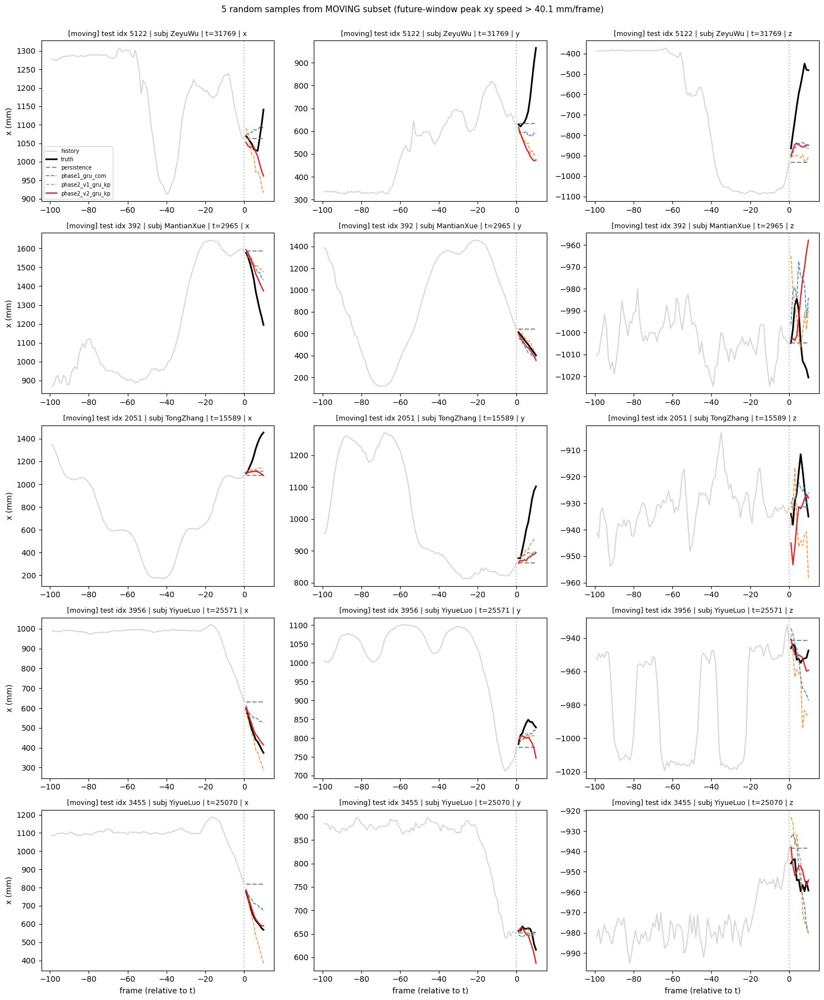
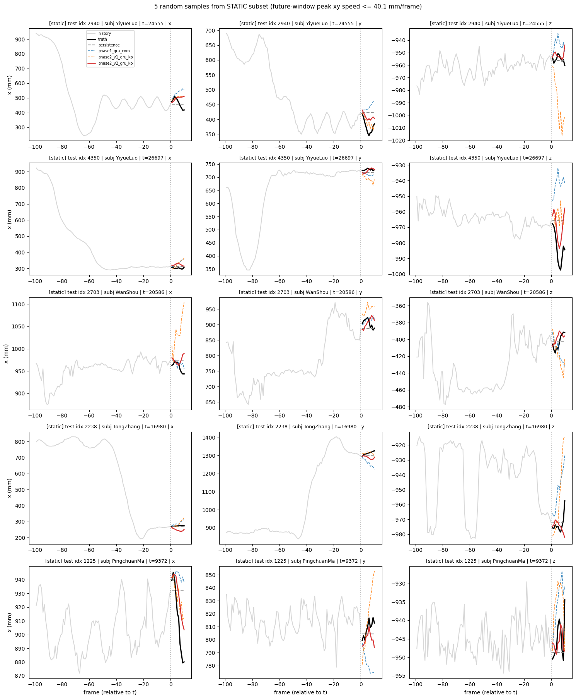
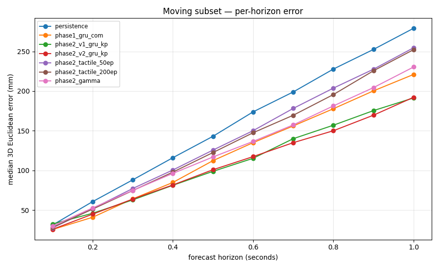
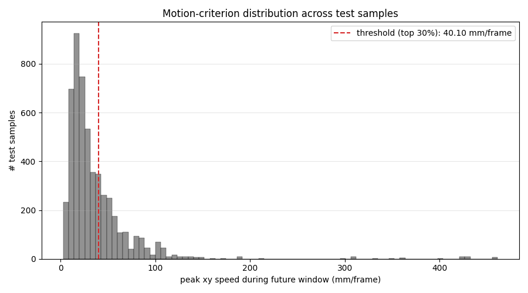
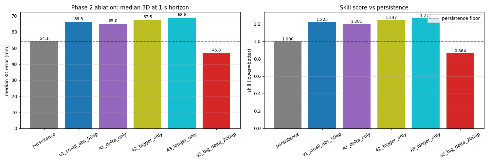

1-second-ahead body-CoM prediction study using the IntelligentCarpet dataset
Jiayi · lab review
Why predict CoM 1 s ahead?
Why CoM: the body's center of mass is the primary balance-relevant variable; clinically used in fall-risk and gait analysis.
Why 1 s ahead: short-horizon kinematic prediction sits at the edge of what pose history alone can do. Long enough that learned dynamics matter; short enough that the task is tractable.
Why tactile carpet: physically the ground-reaction force precedes CoM displacement. A pressure sensor sees the "weight is about to shift toward the heels" cue before the body actually moves.
Central scientific question: does tactile data add forecast-relevant information on top of what camera-derived pose history already provides?
Pipeline overview

Two parallel paths produce CoM. Camera-derived CoM is supervision; tactile-derived CoM is
one of the inputs we test. Forecaster predicts 10 future frames (1 s at 10 Hz).
Two CNNs in this project — don't confuse them:
The original IntelligentCarpet CNN (tile2openpose_conv3d, frozen) — pretrained, used only on the top row of the diagram to map tactile → 21 keypoints → CoM_pred. We don't retrain it.
The forecaster's tactile encoder (used by β and γ) — a NEW, much smaller CNN (3 conv layers + AdaptiveAvgPool + Linear → 128-d feature) trained from scratch as part of the forecaster. Not part of the original IntelligentCarpet codebase.
What "chronological" means: within each session we take the first 70 % of frames in time order for training and the last 30 % for test. We do not shuffle frames across the boundary — the test set is always a strict future relative to the train set. This prevents the train and test windows from overlapping (a window contains 110 consecutive frames), and matches the deployment scenario where a model trained on past data predicts future data.
What is a GRU?
GRU (Gated Recurrent Unit) — a recurrent neural network designed for sequence modeling.
A GRU processes a sequence one frame at a time, maintaining a hidden state vector that summarizes everything seen so far. At each step, two learnable gates decide:
Update gate — how much of the new input should overwrite the hidden state?
Reset gate — how much of the previous hidden state should be forgotten before computing the new candidate?
After all 100 history frames are processed, the final hidden state is a compressed summary of the trajectory dynamics. A linear head reads out the next 10 frames of CoM.
The two gates are what make the GRU learn what to remember vs forget automatically. Without them, the hidden state would either overwrite itself completely each step (no memory) or barely update at all (no learning).
Experimental design
All forecasters predict CoM(t+1 : t+10) (10 future frames = 1 s). Same train/test split, same loss family, same evaluation metric.
GRU notation used below:
GRU(63 → 256) — input dim is 63 (per frame), hidden state vector is 256 numbers wide. Bigger hidden = more capacity to remember subtle history features.
2 L — 2 layers stacked. Second layer takes the first layer's output as its input. Lets the model build more abstract temporal features.
dropout — randomly zero out 10 % of inter-layer connections during training. Regularization — helps the model not memorize the training set.
Median 3D Euclidean error in mm. Lower is better. Skill = method median / persistence median; < 1.0 means beats persistence.
method
FULL median
STATIC median
MOVING median
skill @ MOVING
persistence
54
38
133
1.000
Phase 1 GRU (CoM only)
61
51
105
0.786
Phase 2 v1 (kp, weak)
66
57
96
0.721
Phase 2 v2 (kp, strong)
47
37
91
0.684
β tactile 50 ep
64
51
114
0.860
β tactile 200 ep
58
46
111
0.837
γ fusion (tactile + CoM)
—
—
—
(training)
Phase 2 v2 is the strongest forecaster across every subset. The v2 win required three simultaneous changes from v1: bigger architecture + delta target + 200 epochs with best-val checkpointing.
Ablation: which v2 change carries the gain?
variant
median (FULL)
vs v1
v1 (small / abs / 50 ep)
66
baseline
A1 — delta only
65
−1
A2 — bigger only
68
+2 worse
A3 — longer only
69
+3 worse
v2 — all three
47
−19
Finding: none of the three changes alone closes the gap. The v2 win is a synergy of all three.
A1 (delta target alone) closed only 1 mm of the 19 mm gap. A2 and A3 alone hurt — end-of-training selection penalizes the bigger / longer-trained models because they overfit before they converge.
Implication: no cheap recipe transfer from keypoints to tactile. The "synergy" recipe (delta + capacity + long training + best-val) must be applied jointly, not piecemeal.
What "delta target" means: v1 predicts the absolute future CoM position (e.g. "person is at xyz = (1100, 800, −900) mm 1 s from now"). A1/v2 instead predict the change from the current CoM: Δ = CoM(t+h) − CoM(t). At eval, we recover absolute prediction by adding CoM(t) back. Smaller, better-conditioned regression target — the model only has to learn motion, not absolute position.
The CoP pivot — failed, but informative
2024-2025 literature consensus: tactile/pressure-sensor research targets Center of Pressure (CoP), not CoM. CoP is the centroid of measured pressure — no camera dependency. We asked: should we pivot the target?
persistence target
1-s median (mm)
verdict
CoM 3-D
54
baseline (xyz)
CoM xy 2-D
65
2D projection
CoP 2-D
2.5
too small
CoM 3D vs CoM xy 2D: CoM 3D measures error using all three axes (x, y, z) — the Euclidean distance between predicted and true 3D position. CoM xy 2D drops the z (height) axis and measures only horizontal error. The two are reported side-by-side so CoP (which is inherently 2D — a centroid on the carpet plane) can be compared apples-to-apples against CoM xy 2D, not against CoM 3D which has the extra z component inflating it.

CoP (blue) is essentially flat across horizons; CoM xy 2D (orange) and CoM 3D (green) climb steeply.
Direction killed — CoP barely moves (feet stay planted). Salvage: CoP velocity is the cleanest motion detector. Used to partition the test set in the next slide.
The story flips on the moving subset
Partition the 5,255 test samples by peak future-window xy speed (top 30 % = moving).
method
FULL
STATIC (70 %)
MOVING (30 %)
persistence
54
38
133
Phase 1 GRU
61
51
105
Phase 2 v2 (kp)
47
37
91
β tactile 200 ep
58
46
111
Every learned method beats persistence on the moving subset. First clean positive forecasting result of the project.
Persistence collapses 38 → 133 (3.5×) when motion is real. v2 grows only 2.5×. The full-set persistence-wins narrative was an artifact of static-dominated test data.
For any honest writeup metric: use the moving subset median, not the full set.
Qualitative: what do predictions look like on moving frames?

5 random samples from the moving subset. Black = truth; red solid = Phase 2 v2 (strongest); other dashed lines = baselines and Phase 1.
Same view on static frames — methods collapse together

5 random samples from the static subset. All methods look identical because the truth (black) is essentially flat — persistence wins by predicting "no change."
γ fusion: the binary scientific test (results pending)
Architecture — two-branch late fusion:
Tactile branch: per-frame CNN → GRU(128 → 128)
CoM branch: GRU(3 → 64), same size as Phase 1
Concat → MLP → 10-frame delta CoM
283 k params; 200 ep + best-val
The question: does tactile add forecasting information conditional on already having CoM history?
Three possible outcomes (MOVING subset):
γ median
reading
> 105 mm
tactile redundant given CoM — thesis falsified
91 < γ < 105
tactile contributes, less than camera-pose advantage
< 91 mm
strong positive — tactile carries info camera-pose doesn't
Job 1029582 running on CRC; results expected ~7 h after submission.
Conclusions + next steps
What we learned
Phase 2 v2 (camera pose history) is the strongest forecaster — 47 mm full, 91 mm moving, beats persistence on every subset.
The v2 win is a synergy of three changes (delta target + capacity + long training + best-val). No single change suffices.
The high-motion subset re-evaluation reveals that every learned method beats persistence on frames where motion actually occurs. The full-set numbers were misleading.
Tactile-only is below Phase 1 even on the moving subset — the CNN encoder is the bottleneck.
The CoP pivot taught us that the project's structural bottleneck is data composition, not target choice.
What's next
γ fusion result — the binary answer to the central question. Job running on CRC; results pending.
Open questions to discuss
Make the prediction task more specific? — current target is generic "1-s-ahead CoM." More targeted formulations could be: forecast only at transition events (sit↔stand, gait initiation); forecast only the z component; predict reach/footfall events. These give tactile a narrower regime where its mechanism (GRF precedes CoM) is most informative.
Try other prediction methods? — alternatives we haven't tried: Temporal Convolutional Network (TCN) instead of GRU; small Transformer with relative-position attention; physics-informed forecasters (constant-acceleration + learned residual); diffusion-based stochastic forecasters.
Appendix
Supporting plots and per-subject breakdowns.
Appendix A — Per-horizon error curves on moving subset

Appendix B — Motion-criterion distribution

Heavily right-skewed. Threshold (top 30 %) lands at 40.1 mm/frame — natural shoulder of the distribution.
Appendix C — Phase 2 v2 ablation summary

Appendix D — Project pointers
Code: github.com/Jiayi459/IntelligentCarpet — all forecasters under train/com/
Session log:SESSION_LOG.md — full record of every experiment, decision, and result
Key scripts:
compute_com.py — segmental CoM from keypoints
compute_cop.py — CoP from tactile + persistence baselines